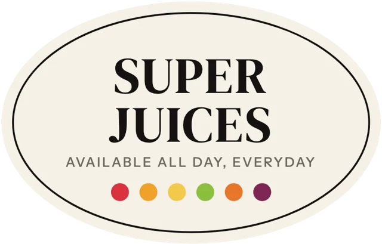
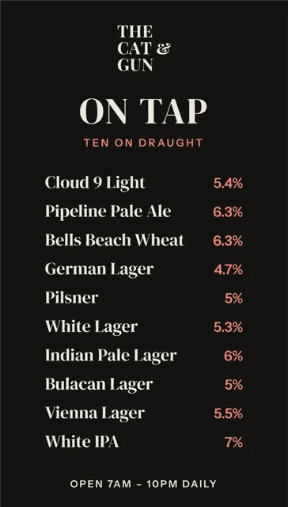
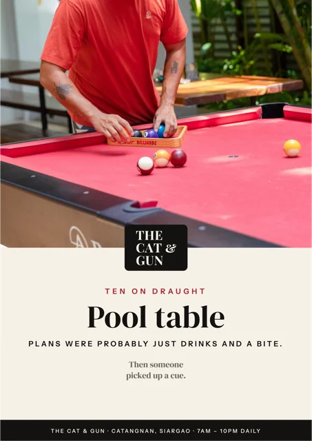
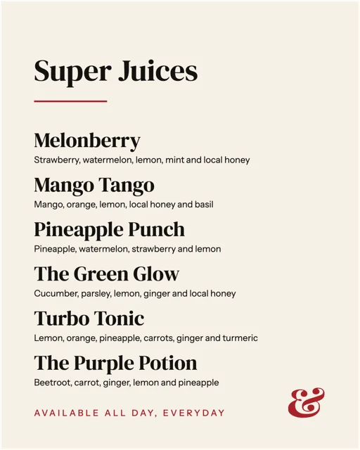
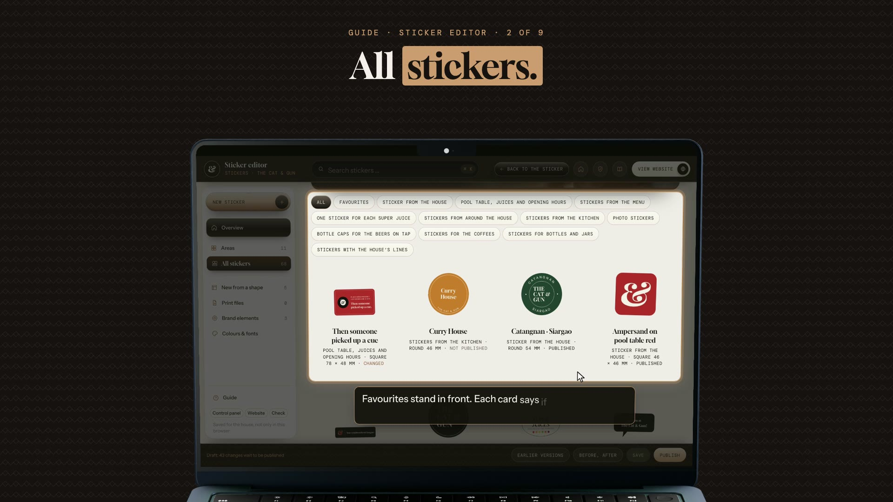
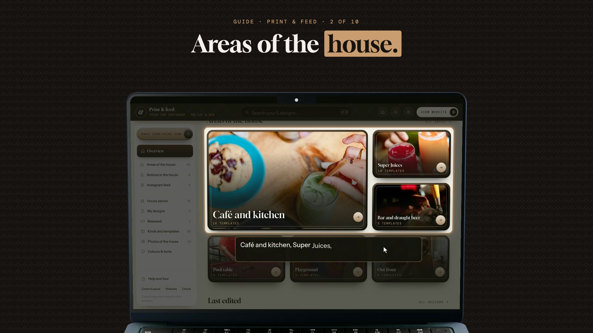

Print & Instagram
Stickers, coasters, boards, posters and Instagram posts from templates.
The Sticker editor holds the stickers of the house. You change them, make new ones and get the files for the printer.
Print & feed has templates for coasters, beer mats, signs, chalkboards, posters, labels, banners and Instagram posts. Fonts, colours and elements come from the brand.
From a template to the printer
Every piece comes out as a PDF for the print shop.





Five pieces of the house, from a template to the printer.
Guides and lessons
2 guides, 2 ready.

Sticker editor
The stickers of the house: change words and colours, design new stickers and get the files for the printer.

Print & feed
Templates for coasters, beer mats, signs, posters and Instagram posts, as PDFs for the printer and as images.
What Sticker editor and Print & feed can do
Every function, area by area. Open a drawer; its picture plays that part of the guide.
Sticker editor
With the Sticker editor you change the stickers of the house, design new ones and get print files. It works without AI.
01All stickersThe overview shows the stickers of the house by area.4 functions
- «All stickers» shows every sticker. You can search and filter by area.
- Favourites stand in front. A sticker can be moved to the front or to the back.
- Each card says if the sticker is published, changed or not published yet.
- The buttons on a card copy a sticker or get its PDF.
02Quick changesThe tab «Quick» changes words and colours.3 functions
- Change the words of the sticker.
- A colour changed here changes every part in that colour.
- After a colour change, text that would vanish on the new ground turns black or paper.
03DesignClick a part of the sticker to change it in the panel «Design».6 functions
- Words, font, size, capitals, letter spacing, colour and alignment.
- Every part can take its own colour, for example the six dots in the Super Juices oval.
- Colours come from the brand palette, as a value or with the pipette.
- The pipette works anywhere on the screen in Chrome and Edge; in other browsers it works in the sticker and in uploaded photos.
- Colours from an uploaded photo appear in every colour choice.
- Drag to move, use the handles to resize or turn. Keys: ⌘Z, ⇧⌘Z, ⌘D and the arrow keys.
04More tools«More tools» opens the advanced tools.3 functions
- Arc text, shapes and lines.
- Position in millimetres, lining up and a grid.
- Layers, hide and lock.
05A new stickerNew stickers start from a shape or a sticker of the house.4 functions
- «New sticker» starts from a shape: round, oval, square, strip or bubble.
- Or copy a sticker of the house and change it.
- «Brand elements» adds the pool ball, the wordmark or the ampersand.
- «Already used» shows when a motif is already on a sticker.
06Print check and print fileBefore printing, the tool checks the sticker.4 functions
- «Print check» shows what to fix before printing (margin, resolution, missing text) and what is only a note. On the phone it is in the menu «Print».
- «PDF for the printer» has 3 mm bleed, a cut line and the fonts embedded.
- A sticker can also be downloaded as a picture or as the working file.
- Characters the font does not have, such as emoji, are named by the print check and left out of the PDF.
07Save, publish, print filesThe bar at the bottom works like in the other tools.4 functions
- «Save» keeps changes in the draft. They are still there after reloading.
- «Before, after» lists the changes. «Earlier versions» brings back an earlier state.
- «Publish» makes the print files of the changed stickers.
- The print files wait under «Print files» in the overview, ready to download. Print & feed reads them from there.
Print & feed
Print & feed makes signs, coasters, table cards, posters and Instagram posts from templates of the house, as PDF to print or as a picture. It works without AI.
01Start pageThe start page shows what you can make.4 functions
- It shows the areas of the house, notices, the Instagram feed and your own designs.
- Templates come in kinds such as coasters, beer mats, signs, chalkboards, posters, table cards, labels, cups, placemat, napkin, cup sleeve, banner and Instagram.
- The search field searches the templates.
- «Blank page» starts an empty design.
02House piecesThe printed pieces of the house can be edited as documents.4 functions
- «House pieces» shows the pieces in groups.
- The pieces of the house also stand first in each kind.
- A changed piece is saved under «My designs».
- «Work on a copy» and «Back to the original» stand under «Piece of the house».
03DesignA template opens in the editor.6 functions
- Click a text and change it.
- The panel «Design» changes font, size and colour.
- «Arrange» and position in millimetres place a part.
- The toolbar adds text, a photo, a mark, a shape or a frame, and sets ground and pattern.
- A design can have a back side and several pages.
- Round formats such as beer mats and coasters have a round cut line.
04Brand kitThe tab «Brand kit» holds the colours, fonts and elements of the Brand book editor.5 functions
- Elements such as the pool ball go into the design.
- The parts of an element can be recoloured one by one.
- Elements go into the PDF as vectors.
- Changes from the Brand book editor arrive without reloading.
- The views «Photos of the house», «Colours & fonts» and «Brand book» show the photos, colours, fonts and wordmark.
05InstagramPosts and stories are made in the same editor.3 functions
- «Phone preview and caption» shows the post on a phone, with a carousel.
- Captions are written by hand, with the lines of the house.
- A design is saved as a PNG picture for Instagram.
06PrintBefore printing, the tool checks the design.4 functions
- «Print check» shows what to fix before printing.
- «Save for print» makes a PDF for the print shop with 3 mm bleed.
- A photo with too low resolution gets a dpi warning.
- The PDF names characters the font does not have.
07My designs and releaseYour designs are kept in the browser.3 functions
- «My designs» holds your own designs.
- «Release» publishes a design for the areas of the house. «Take back» withdraws it.
- If two windows change the same design, the tool reports a conflict and saves the second version as a copy.
Before printing
A printed piece goes this way:
Start from a template. Find it by type, size, area and occasion.
Change the text. Fonts and colours come from the brand.
Run «Print check» before you save for print.
«PDF for the printer» and «Save for print» give the files for the print shop, with 3 mm bleed.
What you know now
Stickers are made in the Sticker editor.
Coasters, boards, posters and posts come from Print & feed.
Print files come with 3 mm bleed.
Posts can be previewed on a phone with caption.